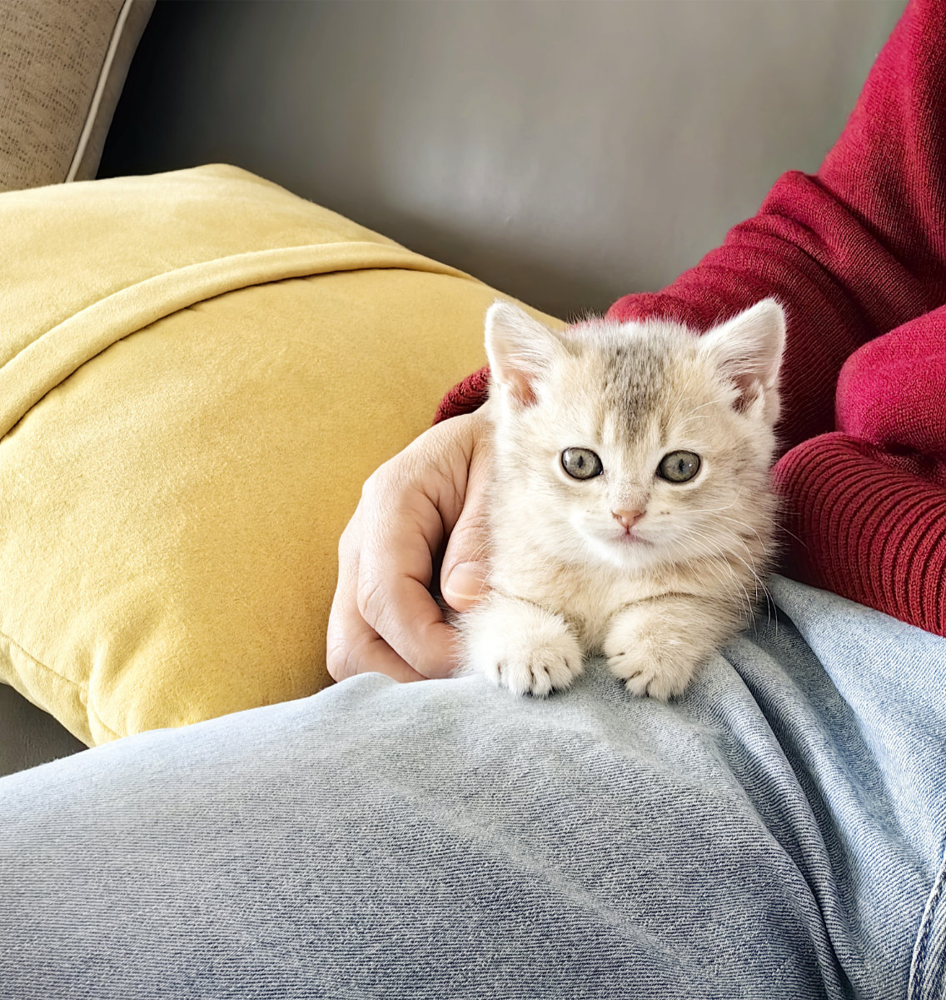
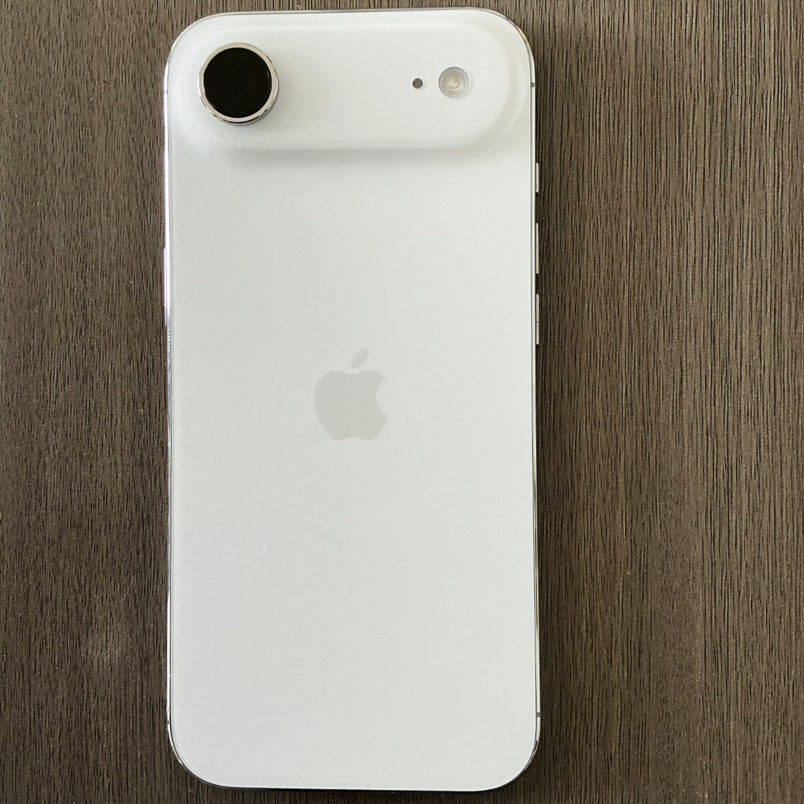
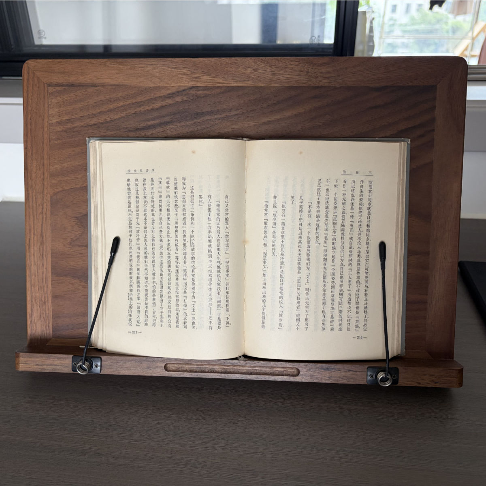

把情感收藏起来
那时，我还是第一次听到“郑智化”这个名字，可我却很喜欢他演绎歌曲的方式，落寞中带着些忧郁，颓废中又有些倔强。
Personal Archive
这里保存一些照片、文字、器材折腾，以及我对日常生活的观察。摄影是入口，文字是线索，最后留下来的大概是一个人的观看方式。

那时，我还是第一次听到“郑智化”这个名字，可我却很喜欢他演绎歌曲的方式，落寞中带着些忧郁，颓废中又有些倔强。

一只蓝金小猫圆圆来到家里，又短暂离开后回到我们身边。关于童年记忆、犹豫和重新接纳它的养猫日记。

Air 最吸引我的是超薄的造型。超瓷晶面板的屏幕比 Pro 稍大，厚度是“迄今最薄”的 5.6 毫米，轻仅165克。而且配备 Pro 级芯片。

阅读效果还是不错的。就象一幅画，观看效果更好，读起来也更方便轻松。
很多年没有写代码了。我以为自己和编程的关系，早已停留在年轻时代学过的 Delphi、数据库和网页制作里。直到某天早晨，我忽然想到：既然 AI 已经能写代码，那么能不能替我维护网站？原本只是一次随手尝试，却意外打开了一扇新的门。
A personal archive of photographs, notes and curiosities.